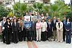

8-9 октября 2004 г. в Сочи проходили 29 курсы Европейского общества по клинической микробиологии и инфекционным болезням (ESCMID).
8-9 октября 2004 г. в Сочи проходили 29 курсы Европейского общества по клинической микробиологии и инфекционным болезням (ESCMID). Эти ежегодные курсы последипломного образования врачей второй год подряд проходят в России благодаря деятельности Межрегиональной ассоциации по клинической микробиологии и антимикробной химиотерапии (МАКМАХ) и Научно-исследовательского института антимикробной химиотерапии (НИИАХ). Проведение курсов ESCMID не только почётно для нашей страны, но и облегчает участие в обучении отечественных специалистов. При этом от последних требуется знание английского языка, к использованию которого обязывает международный характер курсов.
Прошедшие курсы были посвящены проблеме лечения инфекций у больных отделений реанимации и интенсивной терапии (ОРИТ). Курсы открывали генеральный секретарь ESCMID Д. Корналия (Италия) и директор НИИАХ, президент МАКМАХ Л.С. Страчунский. С докладами выступили Э. Рубинштейн (Канада), А. Родлофф (Германия), Ф. Монтраверс (Франция), Н.Н. Климко, Р.С. Козлов, М.В. Эйдельштейн, А.В. Дехнич.
За два дня были рассмотрены проблемы эпидемиологии и резистентности возбудителей инфекций в ОРИТ и вопросы, связанные с применением антимикробных препаратов. Обсуждение специфических проблем ОРИТ вызвало закономерный интерес у врачей различных специальностей, имеющих дело с пациентами, находящимися в критическом состоянии: клинических микробиологов и фармакологов, реаниматологов, хирургов. Особое внимание уделялось проблемам катетер-ассоциированных инфекций, сепсиса, вентилятор-ассоциированных пневмоний. Отдельно рассматривались вопросы правильного забора материала для микробиологического исследования. Был представлен обзор основных механизмов резистентности бактерий, обитающих в ОРИТ. Акцент были сделан на мерах профилактики распространения инфекций из ОРИТ в другие отделения. Всесторонне анализировались вопросы лечения, предлагалась стратегия применения антимикробных препаратов в ОРИТ. После каждого выступления слушатели задавали докладчикам вопросы, обсуждение которых вызвало оживленные дискуссии. Особенно активным было участие зала при обсуждении клинических случаев, имевших место в российских стационарах.
В обучении на 29 курсах ESCMID приняли участие 52 человека, среди которых, помимо россиян, были участники из Турции, Латвии, Украины.
МАКМАХ и НИИ антимикробной химиотерапии выражают коллективу санатория им. Ф.Э. Дзержинского, на базе которого проходили курсы, и начальнику санатория, профессору А.Т. Быкову, глубокую признательность за помощь в организации курсов.

| Фотографии
(Нажмите картинку для просмотра увеличенного изображения) |